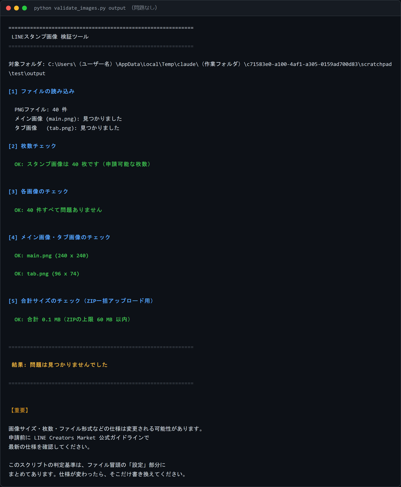
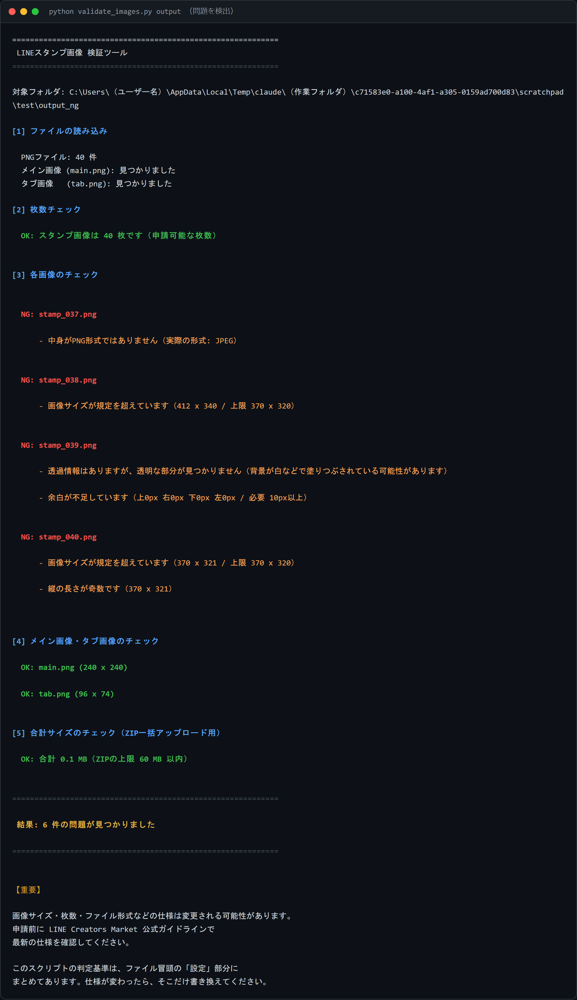

第11章 Claude Codeによる自動化
この章でわかること
- Claude Codeとは何か（プログラミング経験がなくても使える理由）
- ターミナル（コマンドを入力する画面）の開き方
- WindowsとmacOSでの操作の違い
- Claude Codeにフォルダを作らせる方法
- 40個のセリフをCSVで管理する方法
- 画像の連番リネーム
- 画像の枚数・サイズ・PNG形式・透過のチェック
- メイン画像とタブ画像の存在確認
- チェックリスト・SNS投稿案・原稿の自動生成
- 3つのPythonスクリプトの使い方
この章は飛ばしても作品は作れます
先に伝えておきます。
この章の内容がなくても、スタンプは完成します。
手作業でもできます。
ただし、次の場面で差が出ます。
| 作業 | 手作業 | 自動化 |
|---|---|---|
| 40枚のファイル名を連番に変更 | 20〜30分 | 3秒 |
| 40枚のサイズを確認 | 20分 | 2秒 |
| 40枚の透過を確認 | 30分以上 | 2秒 |
| 40枚がPNGか確認 | 目視では不可能 | 2秒 |
| CSVを40行作る | 15分 | 2秒 |
そして、目視では不可能な確認があります。
「拡張子はPNGだが中身はJPEG」を、目で見て判別することはできません。
これがリジェクトの原因になります。
だから、この章を読む価値があります。
Claude Codeとは何か
パソコンのファイル操作を、日本語の指示で実行してくれるツールです。
何ができるのか
具体例で示します。
あなたが打つこと
line-stamp というフォルダを作って、
その中に images、output、csv の3つのフォルダを作ってください。
Claude Codeがやること
フォルダを作ります。
コマンドを覚える必要はありません。
なぜプログラミング経験が不要なのか
理由は2つです。
1. 日本語で指示できる
コマンドの書き方を知らなくても動きます。
2. スクリプトを書いてもらえる
「40枚の画像を連番にリネームするスクリプトを書いて」と頼めば、書いてくれます。
そして、実行までしてくれます。
この章での使い方
このリポジトリには、すでに3つのPythonスクリプトが入っています。
scripts/validate_images.py（画像の検証）scripts/rename_images.py（連番リネーム）scripts/create_csv.py（CSV作成）
まずはこれを実行するだけでも十分です。
Claude Codeは、実行を手伝ってもらう相棒として使います。
ターミナルの開き方
「ターミナル」とは、文字でコマンドを入力する画面です。
黒い画面や白い画面に、文字を打ちます。
Windowsの場合
PowerShell（パワーシェル）を使います。
手順
- キーボードの
Windowsキーを押す powershellと入力する- 「Windows PowerShell」が出てくるのでクリックする
- 青い画面（または黒い画面）が開く
別の開き方
- 作業したいフォルダをエクスプローラーで開く
- アドレスバーをクリックして、
powershellと入力してEnter - そのフォルダの場所でPowerShellが開く
この方法だと、フォルダ移動が不要になります。便利です。
macOSの場合
ターミナル（Terminal）を使います。
手順
Command+Spaceキーを押すターミナルまたはTerminalと入力する- Enterを押す
- 白い画面（または黒い画面）が開く
別の開き方
- Finderで作業したいフォルダを開く
- フォルダを右クリック
- 「フォルダに新しいターミナル」を選ぶ
最初に覚えるコマンド4つ
これだけ覚えれば足ります。
1. 今いる場所を確認する
Windows（PowerShell）
pwd
macOS（ターミナル）
pwd
どちらも同じです。
実行すると、現在の場所が表示されます。
2. フォルダの中身を見る
Windows（PowerShell）
ls
macOS（ターミナル）
ls
これも同じです。
ファイルとフォルダの一覧が出ます。
3. フォルダを移動する
Windows（PowerShell）
cd C:\Users\あなたのユーザー名\line-stamp
macOS（ターミナル）
cd /Users/あなたのユーザー名/line-stamp
違いに注意してください。
| 項目 | Windows | macOS |
|---|---|---|
| 区切り文字 | \（円記号／バックスラッシュ） |
/（スラッシュ） |
| 先頭 | C:\ |
/Users/ |
入力を楽にする方法
cd と打ったあと（半角スペースを入れる）、フォルダをターミナルの画面にドラッグ＆ドロップします。
パスが自動で入力されます。
4. 1つ上のフォルダに戻る
Windows・macOS共通
cd ..
.. は「1つ上」を意味します。
Pythonの導入
3つのスクリプトを動かすために、Pythonが必要です。
インストールされているか確認する
Windows（PowerShell）
python --version
macOS（ターミナル）
python3 --version
バージョン番号（例：Python 3.12.0）が表示されればインストール済みです。
インストールされていない場合
Windows
- Microsoft Store を開く
- 「Python」で検索する
- 最新版をインストールする
または、Python公式サイトからインストーラーをダウンロードします。
インストール時の注意
「Add Python to PATH」というチェックボックスがあれば、必ずチェックを入れてください。
これを忘れると、PowerShellから起動できません。
macOS
多くの場合、python3 が最初から入っています。
入っていない場合は、Python公式サイトからインストーラーをダウンロードします。
python と python3 の違い
これでつまずく人が多いので、はっきり書きます。
| OS | 使うコマンド |
|---|---|
| Windows | python |
| macOS | python3 |
macOSで python と打つと、古いバージョンが動くか、エラーになります。
macOSでは必ず python3 と打ってください。
この章では、以降 python（Windows）／python3（macOS）と併記します。
Pillowのインストール
画像を扱うために、Pillow（ピロー）というライブラリが必要です。
Windows（PowerShell）
python -m pip install Pillow
macOS（ターミナル）
python3 -m pip install Pillow
インストールが終わると、Successfully installed Pillow-... と表示されます。
確認方法
Windows
python -c "import PIL; print(PIL.__version__)"
macOS
python3 -c "import PIL; print(PIL.__version__)"
バージョン番号が出ればOKです。
Claude Codeの導入と起動
インストール
Claude Codeのインストール方法は、公式のドキュメントで確認してください。
インストール手順や必要な環境は更新されることがあります。公式サイトの案内に従ってください。
起動
Windows・macOS共通
- ターミナルを開く
- 作業したいフォルダに移動する
- 次を入力する
claude
Claude Codeが起動します。
使い方の基本
起動したら、日本語で指示を打ちます。
このフォルダの中身を教えてください。
Enterを押すと、答えてくれます。
終了
/exit
または、Ctrl + C を2回押します。
自動化1 フォルダ作成
Claude Codeに頼む場合
そのままコピーして使えます。
現在のフォルダに、LINEスタンプ制作用のフォルダ構成を作ってください。
line-stamp/
├── raw/ 生成したままの画像を入れる
├── edited/ 加工済みの画像を入れる
├── output/ リネーム後の完成画像を入れる
├── final/ 申請用（main.png と tab.png もここ）
├── csv/ stamp_list.csv を置く
├── prompts/ 使ったプロンプトを保存する
└── boneyard/ ボツ案を保存する（SNS投稿用）
各フォルダに、用途を書いた README.txt も作ってください。
既存のファイルは削除しないでください。
自分でコマンドを打つ場合
Windows（PowerShell）
New-Item -ItemType Directory -Force -Path line-stamp\raw, line-stamp\edited, line-stamp\output, line-stamp\final, line-stamp\csv, line-stamp\prompts, line-stamp\boneyard
macOS（ターミナル）
mkdir -p line-stamp/{raw,edited,output,final,csv,prompts,boneyard}
boneyard（ボツ案）フォルダを作る理由
第9章で書いたとおり、ボツ案はSNSでいちばん反応がある素材です。
捨てずに残します。
そして、フォルダを分けておかないと、申請用の画像に混ざります。
これは実際にやりかけた失敗です。
自動化2 40個のセリフ管理（CSV作成）
スクリプトを実行する
Windows（PowerShell）
python scripts\create_csv.py
macOS（ターミナル）
python3 scripts/create_csv.py
実行すると、stamp_list.csv が作られます。
出力される列
number,category,text,emotion,pose,image_prompt,status,filename,notes
| 列名 | 内容 |
|---|---|
| number | 通し番号（1〜40） |
| category | カテゴリー（あいさつ、返事など） |
| text | セリフ |
| emotion | 表情 |
| pose | ポーズ |
| image_prompt | 画像生成プロンプトのメモ |
| status | 進捗（todo / generated / edited / done） |
| filename | 対応するファイル名（stamp_001.png） |
| notes | メモ |
出力先を指定する
python scripts\create_csv.py --output csv\stamp_list.csv
python3 scripts/create_csv.py --output csv/stamp_list.csv
空のテンプレートとして出す
セリフを自分で入れたい場合は、--empty を付けます。
python scripts\create_csv.py --empty
python3 scripts/create_csv.py --empty
40行の枠だけが作られます。
Excelで開いたときの文字化けを防ぐ
このスクリプトは、UTF-8 BOM付きで出力します。
BOM（ボム）とは、ファイルの先頭に付ける短い印です。
これがあると、Excelが「日本語のファイルだ」と判断してくれます。
BOMがないと、Excelで開いたときに文字化けすることがあります。
だから、最初から付けて出力しています。
Claude Codeに頼む場合
csv/stamp_list.csv を読み込んで、次のことをしてください。
1. statusが todo の行を数えて表示する
2. カテゴリーごとの件数を表示する
3. textが9文字以上の行を警告として一覧表示する
4. filenameが空の行があれば、numberから自動で
stamp_001.png 形式で埋める
CSVは上書きせず、csv/stamp_list_updated.csv として保存してください。
自動化3 連番リネーム
40枚のファイル名を stamp_001.png 形式に統一します。
なぜスクリプトを使うのか
手作業で40回名前を変更するのは大変です。
そして、途中で番号を飛ばすと、順番が崩れます。
実行する
Windows（PowerShell）
python scripts\rename_images.py --input edited --output output
macOS（ターミナル）
python3 scripts/rename_images.py --input edited --output output
このスクリプトの安全設計
3つの安全策を入れています。
1. 元ファイルを上書きしません
--input のフォルダは触りません。
--output フォルダにコピーします。
失敗しても、やり直せます。
2. 処理前に一覧を表示します
こういう表示が出ます。
============================================================
リネーム対象ファイル一覧
============================================================
入力フォルダ: edited
出力フォルダ: output
1. IMG_2034.png -> stamp_001.png
2. IMG_2035.png -> stamp_002.png
3. IMG_2036.png -> stamp_003.png
...
40. IMG_2073.png -> stamp_040.png
対象ファイル数: 40 件
============================================================
この内容でコピーを実行しますか? (y/N):
y を入力するまで、何も起きません。
3. 並び順を安定させます
ファイル名に含まれる数字を、数値として比較します。
だから、こうなりません。
× img1.png, img10.png, img2.png
○ img1.png, img2.png, img10.png
確認せずに実行する
自動で進めたい場合は --yes を付けます。
python scripts\rename_images.py --input edited --output output --yes
python3 scripts/rename_images.py --input edited --output output --yes
番号の開始位置を変える
--start で指定できます。
python scripts\rename_images.py --input edited --output output --start 11
stamp_011.png から始まります。
メイン画像とタブ画像は含めない
main.png と tab.png は、リネームの対象から自動で除外されます。
そして、--output フォルダにそのままコピーされます。
自動化4 画像の検証（最重要）
この章でいちばん大事な部分です。
validate_images.py が、次の8項目を自動でチェックします。
| No | チェック内容 | なぜ必要か |
|---|---|---|
| 1 | 本当にPNG形式か | 拡張子だけPNGの偽装を検出 |
| 2 | 画像サイズが規定内か | サイズ超過はリジェクト原因 |
| 3 | 縦横が偶数ピクセルか | 奇数はリジェクト原因になりうる |
| 4 | 枚数が8/16/24/32/40か | 中途半端な枚数では申請できない |
| 5 | RGBA（透過情報）があるか | 透過なしはリジェクト原因 |
| 6 | 実際に透明な部分があるか | 「白塗り」を検出 |
| 7 | ファイル名が正しい形式か | 順番崩れを防ぐ |
| 8 | 画像が壊れていないか | アップロード失敗を防ぐ |
さらに、main.png と tab.png の存在とサイズも確認します。
実行する
Windows（PowerShell）
python scripts\validate_images.py output
macOS（ターミナル）
python3 scripts/validate_images.py output
フォルダ名を省略すると、現在のフォルダを対象にします。
出力例（問題がない場合）
============================================================
LINEスタンプ画像 検証ツール
============================================================
対象フォルダ: output
[1] ファイルの読み込み
PNGファイル: 40 件
メイン画像 (main.png): 見つかりました
タブ画像 (tab.png): 見つかりました
[2] 枚数チェック
OK: スタンプ画像は 40 枚です（申請可能な枚数）
[3] 各画像のチェック
OK: 40 件すべて問題ありません
[4] メイン画像・タブ画像のチェック
OK: main.png (240 x 240)
OK: tab.png (96 x 74)
============================================================
結果: 問題は見つかりませんでした
============================================================
【重要】
画像サイズ・枚数・ファイル形式などの仕様は変更される可能性があります。
申請前に LINE Creators Market 公式ガイドラインで
最新の仕様を確認してください。
出力例（問題がある場合）
[3] 各画像のチェック
NG: stamp_007.png
- 中身がPNG形式ではありません（実際の形式: JPEG）
- 透過情報がありません（カラーモード: RGB）
NG: stamp_012.png
- 画像サイズが規定を超えています（412 x 340 / 上限 370 x 320）
NG: stamp_019.png
- 透過情報はありますが、透明な部分が見つかりません
（背景が白などで塗りつぶされている可能性があります）
NG: stamp_023.png
- 縦の長さが奇数です（370 x 321）
NG: sutampu40.png
- ファイル名が stamp_001.png 形式ではありません
============================================================
結果: 5 件の問題が見つかりました
============================================================
どのファイルに、何の問題があるかが日本語で表示されます。
仕様が変わったときの修正方法
スクリプトの冒頭に、設定をまとめてあります。
# ============================================================
# 設定（LINE側の仕様が変わったらここだけ修正する）
# ============================================================
# スタンプ画像の最大サイズ（幅, 高さ）単位はピクセル
STAMP_MAX_SIZE = (370, 320)
# メイン画像のサイズ（幅, 高さ）
MAIN_IMAGE_SIZE = (240, 240)
# タブ画像のサイズ（幅, 高さ）
TAB_IMAGE_SIZE = (96, 74)
# 申請可能なスタンプの枚数
VALID_STAMP_COUNTS = [8, 16, 24, 32, 40]
仕様が変わったら、この数値だけを書き換えてください。
他の場所を触る必要はありません。
Claude Codeに頼む場合
scripts/validate_images.py を output フォルダに対して実行してください。
エラーが出た場合は、次のことをしてください。
1. 問題のあるファイルを一覧にする
2. 問題の種類ごとに分類する
3. それぞれの直し方を、画像編集ソフトでの操作として説明する
4. 自動で直せるものがあれば、修正方法を提案する
（ただし、元ファイルは上書きしないこと）


自動化5 制作チェックリスト生成
Claude Codeに頼みます。
csv/stamp_list.csv を読み込んで、
制作の進捗チェックリストをMarkdownで作ってください。
【出力する内容】
1. 全体の進捗（todo / generated / edited / done の件数と割合）
2. カテゴリーごとの進捗
3. まだ着手していないセリフの一覧（チェックボックス形式）
4. 生成済みだが加工していないファイルの一覧
5. 次にやるべき作業3つ
【出力先】
checklist.md
【条件】
- チェックボックスは - [ ] 形式にする
- 見出しを使って読みやすくする
- 既存のchecklist.mdがある場合は、
checklist_backup.md として退避してから上書きする
バックアップの指示を必ず入れてください。
これは、上書き事故を防ぐためです。
自動化6 SNS投稿案の生成
以下の情報から、SNS投稿案を作ってください。
【情報源】
- csv/stamp_list.csv（セリフ40個）
- prompts/ フォルダ内のプロンプト（制作過程）
- boneyard/ フォルダ内のファイル名（ボツ案の数）
【作ってほしいもの】
1. Threads向け 3案
2. X向け 3案（各140文字程度）
3. Instagram向け 3案（画像構成＋キャプション）
4. LINE向け 3案
【条件】
- 販売URLだけを貼る投稿は作らない
- 制作過程・ボツ案・失敗談のいずれかを必ず含める
- 誇張表現を使わない
- 実際の売上や販売数を書かない（データがないため）
- 1文を短くして、2〜4文ごとに改行する
【出力先】
sns_posts.md
自動化7 原稿のMarkdown出力
制作記録をnoteやブログ用にまとめます。
このプロジェクトの制作記録を、note投稿用のMarkdownにまとめてください。
【情報源】
- csv/stamp_list.csv
- prompts/ フォルダ内のファイル
- checklist.md
【構成】
1. なぜこのテーマにしたか
2. キャラクター設定
3. セリフ40個の選び方（カテゴリー配分を表で）
4. 使ったツール
5. 実際に使ったプロンプト（コードブロックで）
6. 加工の手順
7. 失敗したこと
8. 申請の流れ
9. これから作る人へ
【条件】
- 見出しを多く使う
- 結論を先に書く
- 1文を短くする
- 2〜4文ごとに改行する
- 誇張表現を使わない
- 実際の売上や販売数を書かない
- 画像を入れる場所に【画像挿入】と書く
【出力先】
note_draft.md
作業の全体フロー（コマンドまとめ）
実際の作業順に並べます。
Windows（PowerShell）
# 1. 作業フォルダへ移動
cd C:\Users\あなたのユーザー名\line-stamp
# 2. Pythonとライブラリの確認
python --version
python -c "import PIL; print(PIL.__version__)"
# 3. CSVを作る（セリフ管理用）
python scripts\create_csv.py --output csv\stamp_list.csv
# 4. 画像を生成して edited フォルダに加工済みを置く（手作業）
# 5. 連番にリネームして output へコピー
python scripts\rename_images.py --input edited --output output
# 6. main.png と tab.png を output に置く（手作業）
# 7. 検証する
python scripts\validate_images.py output
# 8. 問題がなければ申請へ
macOS（ターミナル）
# 1. 作業フォルダへ移動
cd /Users/あなたのユーザー名/line-stamp
# 2. Pythonとライブラリの確認
python3 --version
python3 -c "import PIL; print(PIL.__version__)"
# 3. CSVを作る（セリフ管理用）
python3 scripts/create_csv.py --output csv/stamp_list.csv
# 4. 画像を生成して edited フォルダに加工済みを置く（手作業）
# 5. 連番にリネームして output へコピー
python3 scripts/rename_images.py --input edited --output output
# 6. main.png と tab.png を output に置く（手作業）
# 7. 検証する
python3 scripts/validate_images.py output
# 8. 問題がなければ申請へ
エラーが出たときの確認方法
よくあるエラーと対処をまとめます。
エラー1 python が見つからない
表示例（Windows）
'python' は、内部コマンドまたは外部コマンド、
操作可能なプログラムまたはバッチ ファイルとして認識されていません。
原因
- Pythonがインストールされていない
- インストール時に「Add Python to PATH」をチェックしなかった
対処
- Pythonを再インストールする
- インストール時に「Add Python to PATH」にチェックを入れる
- PowerShellを閉じて、開き直す
PowerShellを開き直すのが重要です。
開いたままだと、設定が反映されません。
エラー2 python3 が見つからない（macOS）
対処
python で試してください。
python --version
バージョンが3以上なら、python で動きます。
エラー3 ModuleNotFoundError: No module named 'PIL'
原因
Pillowがインストールされていません。
対処
Windows
python -m pip install Pillow
macOS
python3 -m pip install Pillow
エラー4 No such file or directory
原因
指定したフォルダやファイルが見つかりません。
対処
- 今いる場所を確認する
pwd
- 中身を確認する
ls
- スクリプトの場所を確認する
scripts フォルダが見えていますか。
見えていなければ、フォルダを移動します。
エラー5 文字化けする（Windows）
症状
日本語が ???? や記号になる。
対処
PowerShellで次を実行します。
[Console]::OutputEncoding = [System.Text.Encoding]::UTF8
そのあとにスクリプトを実行してください。
エラー6 Permission denied
原因
ファイルが他のソフトで開かれています。
対処
ExcelやプレビューでCSVや画像を開いていたら、閉じてください。
エラー7 UnicodeDecodeError
原因
CSVの文字コードが違います。
対処
CSVをテキストエディタで開き、UTF-8で保存し直します。
または、create_csv.py で作り直します。
Claude Codeに頼むときのコツ
コツ1 バックアップの指示を必ず入れる
既存のファイルがある場合は、
_backup を付けた名前で退避してから上書きしてください。
この1文を入れる習慣をつけてください。
コツ2 「元ファイルを上書きしない」と書く
元の画像は変更せず、output フォルダにコピーしてください。
コツ3 実行前に確認させる
実行する内容を先に説明してください。
私が「OK」と答えてから実行してください。
コツ4 結果を日本語で表示させる
処理結果は日本語で表示してください。
コツ5 1回の指示は1つの作業にする
複数の作業を一度に頼むと、途中で失敗したときに原因がわかりません。
よくある失敗
失敗1 python と python3 を間違える
macOSで python と打つとエラーになることがあります。
対策：macOSでは python3 を使う。
失敗2 Pillowを入れずにスクリプトを実行する
ModuleNotFoundError が出ます。
対策：先に pip install Pillow を実行する。
失敗3 Pythonインストール時にPATHのチェックを忘れる
PowerShellから起動できません。
対策：再インストールして「Add Python to PATH」にチェックを入れる。
失敗4 フォルダの場所を確認せずにコマンドを打つ
No such file or directory が出ます。
対策：pwd と ls で確認する習慣をつける。
失敗5 元ファイルを上書きする
やり直しができません。
対策：--output を使って別フォルダに出す。指示にも明記する。
失敗6 ボツ案を申請用フォルダに混ぜる
枚数が合わなくなります。
対策：boneyard フォルダを作って分ける。
失敗7 検証をせずに申請する
リジェクトされます。
対策：申請前に必ず validate_images.py を実行する。
失敗8 修正後に検証を再実行しない
別の問題を作り込むことがあります。
対策：修正のたびに実行する。
失敗9 Excelで開いたままCSVをスクリプトで書き換えようとする
Permission denied が出ます。
対策：Excelを閉じる。
失敗10 Claude Codeに指示を出しすぎる
一度に多くを頼むと、原因の切り分けができません。
対策：1指示1作業にする。
この章のチェックリスト
環境の準備
- ターミナル（PowerShell / ターミナル）を開けた
pwdで現在の場所を確認できたlsでフォルダの中身を見られたcdでフォルダを移動できた- Pythonのバージョンを確認した
- Pillowをインストールした
- Pillowのバージョンを確認できた
スクリプトの実行
create_csv.pyを実行してCSVを作った- CSVをExcelで開いて文字化けしないことを確認した
rename_images.pyを実行して連番にした- 元ファイルが残っていることを確認した
validate_images.pyを実行した- すべての項目がOKになった
自動化
- フォルダ構成を作った（
boneyardを含む） - 制作チェックリストを生成した
- SNS投稿案を生成した
- 制作記録の原稿を生成した
安全確認
- バックアップの指示を出す習慣をつけた
- 元ファイルを上書きしない設定で運用している
- 仕様変更時に直す場所（設定セクション）を把握した
章のまとめ
- Claude Codeは日本語で指示できる。コマンドを覚える必要はない
- 覚えるコマンドは4つ（
pwd/ls/cd/cd ..） - Windowsは
python、macOSはpython3 - Pillowを入れれば、3つのスクリプトが動く
validate_images.pyは、目視では不可能な確認（中身がPNGか、本当に透過されているか）をしてくれる- 仕様が変わったら、スクリプト冒頭の設定だけを直す
- 元ファイルは上書きしない。
--outputで別フォルダに出す - ボツ案は
boneyardに保存する（SNSで使う） - 申請前と修正後は、必ず検証を実行する
次の章では、よくある失敗を20個まとめます。
先に読んでおくと、同じ失敗を避けられます。